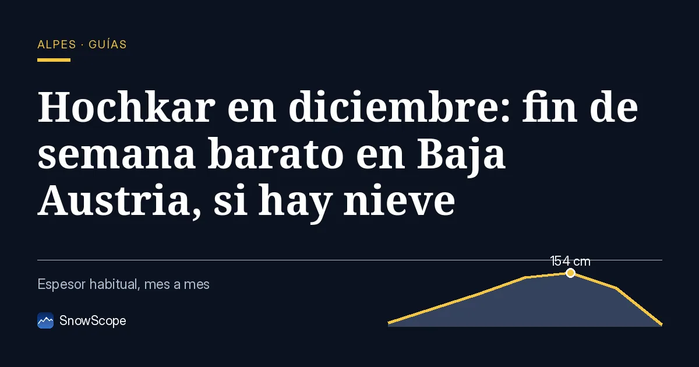
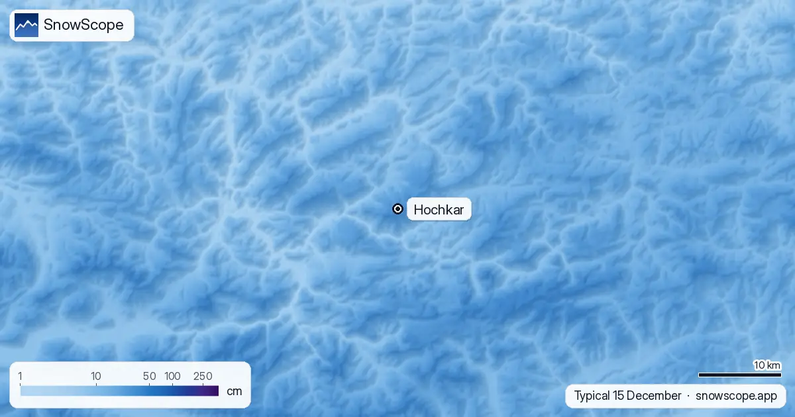

Hochkar en diciembre: fin de semana barato en Baja Austria, si hay nieve
Hochkar puede funcionar para un viaje de fin de semana en diciembre desde Viena, pero la nieve no está garantizada. En un 15 de diciembre típico, media montaña (1583 m) tiene 38 cm, con el 63 % de los inviernos viendo 30 cm o más en la semana del 15-21 de diciembre. El lado del precio es directo: los forfaits diarios online comienzan desde EUR 32,90 en fechas tranquilas.
Consulta la previsión de nieve en tiempo real de Hochkar en la app SnowScopeEspesor de nieve, alertas de nieve polvo y mapa 3D, gratis.
Cuando el nieve de diciembre es lo suficientemente espesa
El Hochkar se eleva a 1788 m, el remonte más alto de Baja Austria. A lo largo de sus 46 inviernos de registros, el suelo nunca ha estado desnudo en la base (1378 m) el 15 de diciembre, así que siempre hay nieve. Lo que importa es si hay suficiente para esquiar.
La fiabilidad cambia a lo largo del mes. En la primera semana de diciembre (1-7 dic), solo el 43 % de los inviernos tuvieron 30 cm o más en la base. Para mediados de diciembre esa proporción salta al 52 %, y en la semana de Navidad alcanza el 61 %. En media montaña, las probabilidades son mejores: 59 % del 8-14 de diciembre y 74 % en la semana de Navidad.


La altura marca la diferencia
La cima de la montaña cuenta una historia diferente. En un 15 de diciembre típico la cima (1788 m) tiene 49 cm, contra 32 cm en la base y 38 cm en media montaña. En el 72 % de los inviernos la cima tuvo 30 cm o más en la semana del 15-21 de diciembre, aumentando al 80 % en la semana de Navidad.
La base es el punto débil. Los años finos (1 de cada 10) ven solo 8 cm allí el 15 de diciembre. Si vas, esquía los remontes y pistas superiores primero, mientras la cobertura sea mejor.
La tendencia a largo plazo
La nieve de diciembre en esta montaña se ha reducido. En media montaña, el promedio en los primeros 15 inviernos del registro (1980-81 a 1994-95) fue 51 cm, pero en los últimos 15 inviernos (2011-12 a 2025-26) bajó a 29 cm. El invierno pasado tuvo solo 2 cm el 15 de diciembre y 3 cm la Nochebuena.
Eso importa para planificar. Una semana de diciembre fiable aquí es ahora la excepción. La ventana es la semana de Navidad en adelante, cuando los patrones de nieve antiguos todavía ofrecen el 74 % de probabilidades de 30 cm en media montaña.
Coste y timing
El Hochkar usa precios completamente dinámicos a través de su tienda online. Los forfaits diarios para adultos en diciembre de 2026 oscilaban entre EUR 32,90 en fechas tranquilas y EUR 47,90 en días ajetreados. El sitio oficial dice que los precios online son aproximadamente un 15 % más baratos que comprar en taquilla.
No hay un precio de forfait multidía fijo anunciado, lo que tiene sentido: la mayoría de visitantes vienen por un día o un fin de semana. Decide en la misma semana que planeas ir, vigila el pronóstico y SnowScope, luego reserva una fecha tranquila online.
Lachtal: la alternativa al lado
Lachtal en Estiria está a 50 km de distancia, con una base más alta (1572 m) y cima más elevada (2199 m). Su media montaña (1885 m) tiene 46 cm en un 15 de diciembre típico y el 72 % de los inviernos con 30 cm en la semana del 15-21 de diciembre, ligeramente más fiable que Hochkar. Un forfait diario cuesta EUR 62.
Para una excursión diaria barata desde Viena, Hochkar gana en precio. Para un fin de semana donde la nieve es la prioridad, la altura de Lachtal ofrece mejores probabilidades, aunque a mayor coste.
Cómo hacerlo funcionar
Planifica tarde, no con anticipación. Principios de diciembre es una apuesta; apunta a la semana antes de Navidad o más tarde. Reserva online para un día laborable cuando los precios son más bajos y el pronóstico de nieve es firme.
Antes de subir, consulta el boletín de avalanchas de Lawinenwarndienst Niederösterreich (lawinen.report) si planeas salir de las pistas marcadas. La carretera es una carretera de montaña: lleva neumáticos de invierno después de cualquier nevada.
Consejos para esquiadores
- Vigila el pronóstico para la semana que estés pensando, no un mes adelante. Los diciembres finos son ahora comunes aquí; reserva solo cuando SnowScope muestre 30 cm o más en media montaña.
- Compra online y elige un día laborable tranquilo. Los precios dinámicos son más bajos cuando la demanda es baja.
- Comienza en los remontes superiores. La cima de la montaña es la altura más fiable en diciembre.
- Lleva neumáticos de invierno y consulta el boletín de avalanchas si te vas fuera de pista.
- Si diciembre se ve flojo, espera a enero, cuando la profundidad de nieve típicamente alcanza 61 cm en media montaña.
Sobre estas cifras
Los espesores de nieve de las estaciones son la nieve más profunda en las pistas altas en la fecha indicada; son estimaciones para una zona, no una medida en un punto. Las previsiones pueden cambiar. Consulta siempre el boletín oficial de aludes antes de salir fuera de pista.
Boletines oficiales de aludes: Lawinenwarndienst Niederösterreich
Citar este informe
Para investigación, docencia o prensa: cifras y gráficos reutilizables libremente bajo CC BY 4.0 con esta cita.
SnowScope (2026), Hochkar en diciembre: fin de semana barato en Baja Austria, si hay nieve, https://snowscope.app/blog/es/2026/11/hochkar-december-skiing-vienna-weekend-budget.html, consultado el 2026-11-14
SnowScope (Atlas Labs). (2026, November 14). Hochkar en diciembre: fin de semana barato en Baja Austria, si hay nieve. SnowScope snow reports. https://snowscope.app/blog/es/2026/11/hochkar-december-skiing-vienna-weekend-budget.html
BibTeX
@misc{snowscope2026hochkardecemberskiingvie,
author = {{SnowScope (Atlas Labs)}},
title = {Hochkar en diciembre: fin de semana barato en Baja Austria, si hay nieve},
year = {2026},
month = nov,
howpublished = {\url{https://snowscope.app/blog/es/2026/11/hochkar-december-skiing-vienna-weekend-budget.html}},
note = {Published 2026-11-14 20:11 UTC; accessed 2026-11-14}
}· CC BY 4.0 · Métodos, datos y herramientas →
Hochkar: nieve y temperatura según la altura, este invierno vs el pasado (herramientas) →
Sigue Hochkar
Gratis: un aviso cuando llega la nieve y la previsión cada mañana.